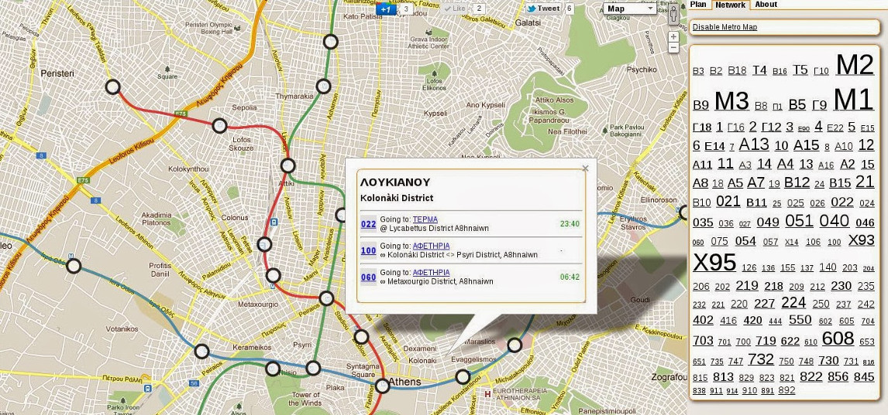
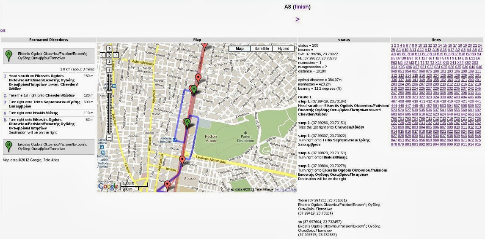
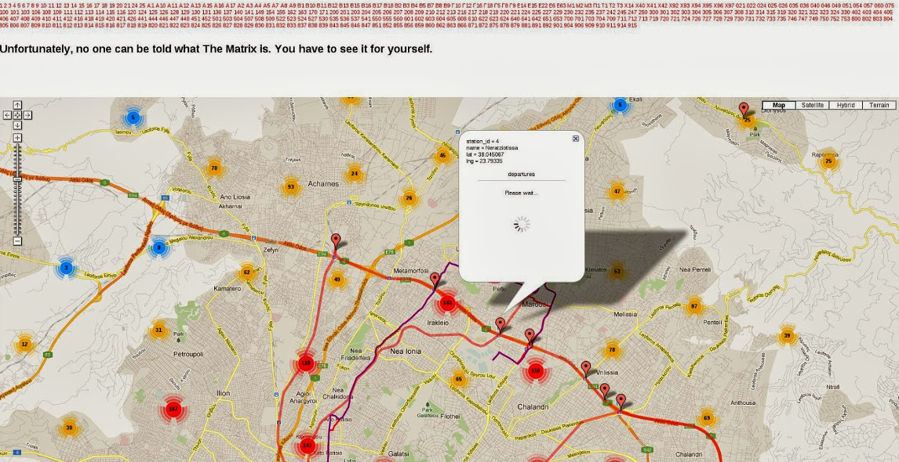

I've finally created a Beta version of my Athens public transport trip planner, schedule and routing app.
The app supports the following main features:
I started the app in 2009 when I moved to Athens (I've recently left). I found it difficult to make any sense of the public transport system. With the exception of the Metro, the rest of the transport means seemed a mystery to me. The only available information at the time were lists of stops and streets from the OASA website. Furthermore, there were even inconsistencies between time table data in Greek and English. The only semi-useful information seemed to be some outdated pdf route maps probably created some time around the Athens olympics.
At the time, I thought it would be a nice idea to create a trip planning app using data which I planned to scrape and create myself. This seemed pretty straight forward at the time and I estimated I could complete the task by devoting a few weekends to it over a period of 4-6 months. However, given that I'm posting this now (January 2012) its pretty obvious that I underestimated the complexity of the job. I ended up working on this app for about 3 years, spread over the odd weekend here and there whenever I had nothing to do, which is quite rare if you live in Athens :)
I began by focusing on harvesting the data I would need for the app. This involved designing a database schema to hold routes, time tables and stop information. I populated this schema by defining the Metro, ISAP and Proastiakos stops and routes by hand - creating line-strings and stop locations. I then populated the Proastiakos time table data by hand (literally) by inputting time table data I found in the stations. The metro and ISAP data was a little more interesting, since the only available data was frequency based. So given frequencies, first and last departures, I created some throw away code to calculate complete schedules for all stations by simulating the minimal number of vehicles needed to maintain the published frequencies given the length of each route.
The next step was daunting, and having spent quite some time to generate just the rail data, I knew that generating data for the entire Athens bus network would be the most time consuming part. Nonetheless, I continued with the hope that I could find a nice way to automate and speed up the data generation process. I started by snatching and parsing route descriptions from OASA which described each route by a textual ordered list of stops and corresponding list of streets. Given this raw data, the next task was to somehow generate a set of line-strings and stop locations for every single route.
To do this, I created a kind of bus route creation tool (shown above) using google maps api (at the time v2) directions and geocoding services. The tool worked by geocoding the list of roads for each route, and then with the help of google's directions service, extract the path for the set of geocoded roads. Then, for each automatically generated path I estimated the bus stop locations by evenly distributing the number of stops for each route over each path. The next phase involved checking each estimated route and manually redefining stops and line-strings where the automated generation had failed.
Eventually I ended up with the prototype shown above - this simply allowed viewing of individual routes and stops. At this point I dropped the project for some time to work on other things. When I returned I was happy to learn that OASA, via the Greek government open geo-data initiative had released time table data in GTFS format. This really helped me, since I had not yet started on creating time table data for buses as I had done earlier with the train network. This, in my opinion, is a great move since it allows developers like me to concentrate more on the creation of an app rather than harvesting and structuring scrapped data. This video I re-posted some time ago on this blog pretty much sums up the benefits.
I also believe the initiative to publish official feeds makes more sense than spending millions(?) on projects such as Attica Routing Portal and the more recent Opti-Trans project, since once these contracted projects are complete, they are likely to lay rotting due to the fact that funds are required to maintain them and eventually just serve as relics based on depreciated routing data.
Although a good move, the GTFS feed itself is not at the moment in good shape. I've been told that OASA are working to fix it, but in the mean time if you are interested in using this data there are a few things to note: (1) The feed is invalid - E.g., it does not conform to the GTFS spec. (2) Quite a few of the stops are in the wrong order. (3) The schedule data for intermediate stops is very wrong for some routes, showing buses traveling greater than the speed of light!